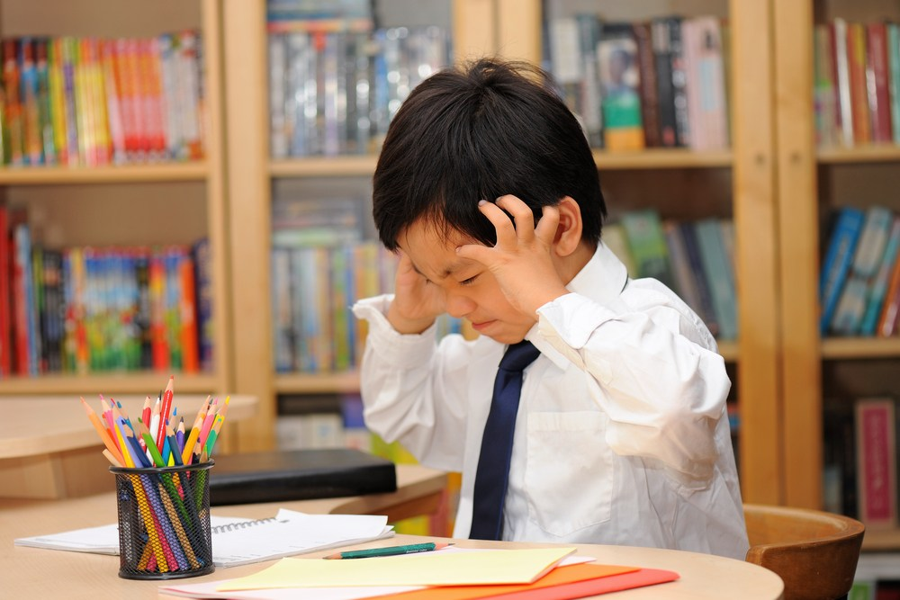

-

压力
”XXXXXXXXX，XXXXXXXXXX“ -

矛盾
”XXXXXXXX，XXXXXXXX“ -

内卷
“XXXXXX，XXXXXX”
孩子们有话说
孩子们有话说
博文
教育减负的博文数量波浪式起伏
社会竞争有多大
作业、特长、补习班......如今中国的儿童们正面临着滚雪球般的压力，
多少成年人所留念的“轻松、自由、快乐的少年时代”，如今也成为儿童们的奢望。
一部育儿相关的电视剧《小舍得》引发众多关注，不少人疑惑现在的孩子真的会这么累吗？
事实正如电视剧所演绎的一样，
现在的孩子每天都要耗费大量的时间在作业以及各类课外辅导上，
被迫成为“时间管理大师”。
图1
图2
2016年，由于人口出生率不断下降，我国出台二孩生育政策，
但一直到2020年，出生人口仍旧只有1200万人，出生率已连跌4年。
于是在2021年5月，国家继而发布三孩生育政策。
新生儿逐年减少，学校的数量也随之减少，但课外教育产业的规模却呈现出高速发展态势。
我们统计了自2016年起近五年，中国义务教育阶段的学校数量以及课外教育的产业规模，
并将其变化进行对比。
“这届孩子，是被‘累垮’的一代。”
正如著名教授李玫瑾所说。
现在的孩子每天都要耗费大量的时间在作业以及各类课外辅导上，学习的时间远远超乎我们的想象。
谁动了孩子们的睡眠
被占用了大量时间的孩子们，睡眠时间也被压缩。
睡眠对于儿童的发育和健康是十分重要的，
早在10年前，《中小学健康教育指导纲要》中就已经指出:
小学生每天睡眠时间10个小时，初中生每天睡眠时间9个小时。
而据《2019中国青少年睡眠健康研究报告》可见，
睡眠时间长于10小时的小学生不足10%，
绝大部分中学生睡眠时间都低于9小时。
是什么抢走了孩子们的睡眠？
那些深夜11点还没有睡觉的孩子在做什么？
写作业。这是一个毋庸置疑的回答。
“假期作业一点儿不少，现在临近期末了几乎每科老师都发了好几份卷子，孩子每天晚上都睡得挺晚，昨晚也是差不多11点才睡觉。”小聪的爸爸说。
“只要语文老师留了阅读作业，我家孩子那天的睡觉时间就会很晚。”初一学生家长刘女士说。
不断增加的学习时间，
日益频繁的作业考试，
越堆越高的作业本，
应试竞争下的压力循环……
学校、老师、补习机构，甚至家长们，
一点点带走了孩子们的睡眠时间
上了什么补习班
“现在升学压力大，大家都在补，我们家能不补吗？”
“你看领居家小李，一直都是班级前几，你要向他看齐，多向他取取经。”
每每小测成绩公布，小陈就被妈妈的“唠叨”扰得心烦意乱。
应试教育的现状下，
课业成绩早已成了家长心中最亮的灯，
也是最深的刺。
根据《2019年中国商业教育辅导市场消费力报告》显示，
基于小学到高中学龄孩子的家长，
家庭教育支出，
包括学校教育、校外商业教育辅导以及一切与孩子教育相关的直接花费，
每家庭每学期（半年）平均支出为5877元。
报告中有72.8%的家庭中孩子教育支出占家庭总支出的十分之一以上，
其中竟然有14.6%的家庭中孩子教育支出超过家庭总支出的一半以上，
这个数目是相当可怕的。
汪雨家孩子豆豆今年11岁，上数学补课班一节课200元，钢琴兴趣班一节课500元，英语课外辅导一节课350元。
“一个月一万多块就没了。”汪雨说，
他是一家企业中层管理人员，老婆是外企白领，一年30多万的收入，
以前觉得很宽松，闲暇时还能出国旅游，现在觉得日子过得紧巴巴的。
家庭条件较好的汪雨一家对日益高昂的培训费也很头疼。
“我现在给孩子补的语文和数学，还在上围棋课和绘画课。
原来还报了舞蹈和钢琴课，实在是负担不了，后来取消了。”
汪雨有些哭笑不得。
“最辛苦的不是读书这条路，而是一旦在同龄人中落后，那孩子以后的路才是最辛苦的。”
汪雨说，他们那一代人，大家在上学时条件都不怎么好，竞争体现在个人的努力和勤奋上。
“现在，同代人竞争从小就开始了，实际上是家庭实力的竞争。”
根据调查结论，在校外辅导上，85.5%的中小学生会参加学科课程，40.4%的中小学生会参加兴趣课程。
学科课程中，英语、数学/奥数、语文/作文作为三大主科，是中小学生报名率最高的三大科。
而在兴趣课程中，书法绘画、舞蹈、乐器的报名率较高。
显然，语数英三大主科作为拉分的关键，毫无疑问地成为家长们乐于积极投资的补习班科目。
如此大的教育投入，势必会增加家长的焦虑情绪，乃至引发一系列的亲子矛盾和家庭问题。
调查显示，有68%家长对孩子的教育感到“比较焦虑”“非常焦虑”，
而这些焦虑情绪，家长们会在孩子的幼儿阶段、小学阶段、初中阶段表现得比较明显，
其中之最则是在小学阶段。
小学阶段，是很多成年人事业的上升期，也是孩子们今后成绩、升学等拉锯战的开始，
在这一起跑的关键结点，许多家长们往往费尽心思，想法设法让自己的孩子赢在起跑线上，
也因此忙得焦头烂额，给自己和孩子施加了本不应有的过多的压力。
在孩子成长的过程中，中国父母普遍受焦虑情绪的困扰，
小到什么时候说活，读什么幼儿园，
大到考什么大学，从事什么工作，
无一不是在焦虑中艰难抉择。
全社会的合力影响下，
家长们把阶层跃升和巩固的希望更多地寄托于孩子的教育上。
《2018-2019中国家长教育焦虑指数研究报告》中显示，
社会环境是造就中国家长教育焦虑的首要维度，家庭关系则位居其后，
后两者则分为教育资源及模式以及父母能力与发展维度。
值得注意的是，家长们对这四个维度的焦虑程度均已超过一般，接近于“比较焦虑”。
随着三孩政策的推出，社会竞争的激烈程度只会与日俱增，教育资源的分配问题将会变得更加困难和棘手。
很难说，哪个因素会成为“压倒成年人的最后一根稻草”。
出国还是留在国内
不少“70后”家长选择出国是认为理想中的教育模式与现实中的教育模式有差别,
更希望孩子能顺从本性，快乐成长。
“国内的高中多是应试教育，孩子每天有做不完的试卷，成绩的浮动影响着一家人的心情。
孩子压力大，父母压力也大，所以才想早早送孩子出国留学。”
市民赵女士说,
她不少朋友也在高中或初中阶段就将孩子送出国。
不少“80后”父母都在提前为孩子留学做准备。
张妈妈为让孩子提前了解国外的教育模式，
将其送到了格兰德中学，学习国际课程。
周末又让孩子在英科少年学院跟着外教学英语。
“每年都会带孩子出国看看国外的大学，孩子对悉尼大学和墨尔本大学比较感兴趣。”
小政(化名)的父母是国企高管,他们从高中开始便送小政去了国外。
“出国前,我就读的是本地最好的中学，成绩在班级名列前茅。
从初二开始,爸妈就给我定下了去美国读高中的目标。”
由此可见，
国外优质的教育资源以及国内过大的学习压力和竞争都促使越来越多的家长选择低龄留学。
有的家长唯恐自己在这场“鸡娃”竞争中落后，错失先机，让孩子丧失了竞争优势，
因此拼尽全力都要将孩子尽早送出国，
还有的家长则认为国内压力大，中高考竞争太激烈，
为了避免“千军万马过独木桥”，趁早送孩子出国。
相比于市场上对于国际化教育，出国留学的“唱衰”，
现阶段的家长反而更加坚定了走国际化教育道路的信心，比例不降反增。
选择双语、国际班家庭超过选择公办/体制内民办校，
选择体制内公办&民办占37.7%（2020年为46.4%，下滑近10%），
有39.4%的家庭选择民办双语/国际部，
4.9%的家庭选择外籍学校，
7.1%的家庭选择海外学校。
有趣的是，
面对更小年龄的二孩和三孩，
集中在小学1-3年级以及幼儿园阶段，
家长选择公办、体制内民办的占比会更小，
外籍学校占比增加。
二孩就读的学校中，外籍学校比例增高，占9.5%，
公办比例下降，仅占15.5%。
尽管留学潮流不减，但家长和孩子仍对留学充满各种焦虑和担忧。
尤其在疫情之下，
低龄小留学生的安全和健康问题确实令人担心，
这也促使了一批海外小留学生的回流。
而在其他方面，
文化差异和语言交流也成了留学生们顺利留学毕业的“绊脚石”。
即使是疫情下不能出国上夏令营、旅行，
暑假花费3万以上的家庭依旧占了31.8%，
花费1万以上家庭占72.4%。
那这些钱都烧在哪里了呢？
旅行、夏令营、还有学科类和非学科类的课外培训班（包括艺术、体育STEM等），
其中包括艺术、体育、STEM等非学科类课外班是孩子投入精力最多的活动。
即使是疫情下不能出国上夏令营、旅行，
暑假花费3万以上的家庭依旧占了31.8%，
花费1万以上家庭占72.4%。
那这些钱都烧在哪里了呢？
旅行、夏令营、还有学科类和非学科类的课外培训班（包括艺术、体育STEM等），
其中包括艺术、体育、STEM等非学科类课外班是孩子投入精力最多的活动。